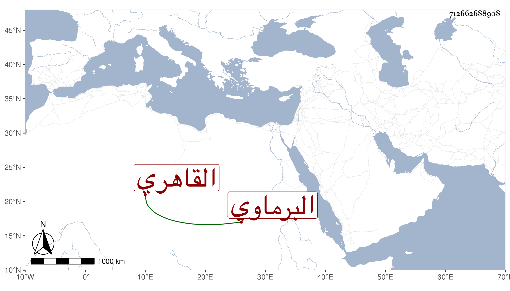

0902Sakhawi.DawLamic.ITO20230111-ara1.EIS1600.712662688908
Biography ID: 712662688908
528
فاطمة ابنة إبراهيم بن أحمد بن عبد اللطيف بن الشيخ نجم الدين بن عبد المعطي البرماوي ثم القاهري أخت عثمان وعبد الغني وغيرهما وزوج عمر بن إبراهيم القمنى . ولدت سنة سبعين تقريبا أو بعدها وأجاز لها في استدعاء مؤرخ بسنة ثمان وتسعين أبو هريرة بن الذهبي وابن العلائي وجماعة ، وحدثت باليسير قرأت عليها جزء القزاز . وماتت في ربيع الثاني سنة احدى وخمسين بعد زوجها بأربعة أيام .
